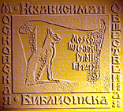

|

- Очерки психологии мировоззрения как основы просветительской практики ( Comments )
- От ничтожности к сопоставимости с Мирозданием или к вопросу о смысле существования человека ( Comments )
- Нобелевская лекция И.П.Павлова 'О русском уме' ( Comments )
- Проект "Бизнес, власть, общественность и СМИ в российской благотворительности" ( Comments )
- Дело Виталия Бунтова ( Comments )
- Дело Егора Новиковского ( Comments )
- Все мы сыны и дочери Человечества, но не собственность возомнивших о себе… ( Comments )
(все новости...)


Интервью с Дмитрием Якубовским |
||
|
|
|  | Литературное приложение к газете «Петля обратной связи» Москва, №3, сентябрь 2010 г. |
-
-
В данном номере нашего «Литературного приложения» мы публикуем материалы журнала «Люди как они есть», посвященные драматической судьбе человека, причастного к ключевым событиям посткоммунистической России вплоть до трагедии октября 1993 г. -
-
Содержание: -
1. Биографическая справка о юристе Дмитрии Якубовском - с.с. 1-2 -
2. Интервью с Дмитрием Якубовским - с.с. 2-6 -
-
1. Биографическая справка о юристе Дмитрии Якубовском из журнала «Люди как они есть», предваряющая интервью с героем нашего выпуска. -
«Якубовский Дмитрий Олегович родился 5 сентября 1963 года в подмосковном Болшево в семье военного. Со школьной скамьи мечтал об офицерской карьере, поступил в военное училище. Но после первого курса был отчислен "за низкие моральные качества" и призван в армию. -
После службы окончил Всесоюзный заочный юридический институт. -
С декабря 1984 года - старший консультант Президиума Московской коллегии адвокатов. -
С июля 1987 года - начальник управления в прокуратуре Москвы, с декабря того же года - секретарь правления Союза адвокатов СССР. -
В ноябре 1990 года приказом министра обороны СССР Язова назначен руководителем комиссии юристов, проводивших экспертизу имущества Западной группы войск (3ГБ). -
После проведения проверки по рекомендации председателя президиума Верховного СССР Лукьянова направляется на работу в швейцарское представительств АО "Агрохим". -
В августе 1991 года Якубовский перебирается из Швейцарии в Канаду, в марте 1992-го возвращается в Москву, где председатель Комитета по подготовке и проведению военной реформы Кобец назначает его экспертом этого Комитета. -
В июне того же года Шумейко (тогда - вице-премьер) делает его советником правительства... -
Деятельность Якубовского была столь активна, что уже через месяц ему (кстати, «дослужившемуся" до звания полковника - ред. журнала) вручают именной кортик «за эффективную помощь в вопросах создания ВМФ (Военно-морского флота - Б.Д.) России и решения социальных программ". -
А вскоре совсекретным распоряжением все того же Шумейко специально для него учредили должность полномочного представителя правоохранительных органов, специальных и информационных служб в правительстве Российской Федерации. -
Но тут вмешались руководитель президентской Службы безопасности Коржаков и вице-премьер Скоков, Якубовскому пришлось срочно отбыть в Канаду. Тем не менее, 2 апреля 1993 года заместитель министра внутренних дел Дунаев и начальник национального бюро Интерпола в России Игнатов одновременно (!) награждают его бронзовой и серебряной медалями национального бюро Интерпола, а через месяц его отмечают и почетной грамотой ГУВД Москвы "за большой личный вклад в дело технического оснащения московской милиции и решения ее социальных вопросов". -
Вскоре Якубовского тайно вызывают в Москву и поселяют в Кремле, где он, по его словам, готовил предложения по "мирному разрешению" кризиса власти. -
Однако в столице он не засиделся, его так же тайно, через Армению, переправляют назад в Канаду. -
В сентябре, когда разгорелся скандал с "трастом Руцкого", канадского изгнанника навестили адвокат Макаров и прокурор Ильюшенко, главные действующие лица этой истории. -
Решающую роль Якубовский сыграл в отставке главы госбезопасности Баранникова, с которым находился в дружеских отношениях, а затем предоставил на него компрометирующий материал. -
Вернувшись в Россию после октябрьских событий 1993 года, Якубовский занялся адвокатской практикой, причем весьма успешно. Но в ставшей к тому времени традиционной "войне компроматов" его имя фигурирует вновь и вновь: слишком много и слишком о многих он знал. -
В конце 1994 года Якубовского неожиданно арестовывают по обвинению в причастности к краже старинных книг из Публичной библиотеки в Санкт-Петербурге и отправляют в следственный изолятор "Кресты". Следствие длится почти два года, потом - долгий судебный процесс и приговор: четыре года заключения. Попутно против него возбуждается еще одно дело - по обвинению в сексуальных домогательствах и избиении сокамерника. -
Якубовский женат, имеет дочь. Семья живет в Канаде.» -
Комм. Б.Д. -
Судя по справке, Д. Якубовский был очень нужной и заметной фигурой в правящих кругах России до 1993 года. Его послужной список указывает на его чрезвычайную работоспособность и исполнительность. Простому мелкому жулику или подонку не поручали бы столь ответственные поручения юридического характера. -
Но если перечисленные деликатные поручения и считать мошенничеством, то кто тогда были его руководители? -
-
2. Интервью с Дмитрием Якубовским
«После приговора»
-
«Самый знаменитый узник петербургских «Крестов» ( тюрьма в Санкт-Петербурге - Б.Д.) -
отвечает на вопросы корреспондента нашего журнала». -
«Подтвердив молву, что ничего невозможного для него нет, Дмитрий Якубовский сумел оборудовать себе рабочее место даже в "Крестах". -
Когда меня ввели в комнату, предназначенную для разговоров заключенных с адвокатами, он уже был там и радушно меня приветствовал. Впрочем, я слышал, что в этой камере, то есть комнате, Якубовский проводит все рабочее время, что здесь его "кабинет". Увидев, что я достал сигареты, хозяин "кабинета", не обращая внимания на присутствующего при разговоре представителя администрации следственного изолятора, сказал: "Вот у меня тут баночка есть", - и выставил на стол приспособленную под пепельницу жестянку из-под кофе... Выглядел он бодро и ухоженно, как после бани, и прическа была как из салона. Голливудская улыбка, похоже, прописалась на его лице навечно. -
(Как это знакомо. Мне тоже, когда я улыбался в трудном разговоре с опасными недоброжелателями или в других серьёзных ситуациях, часто говорили с недоуменным осуждением: «А он ещё и улыбается ?! - Б.Д.) -
- Вы стали героем не только уголовной хроники, но и мемуаров. Вот что пишет о вас Олег Попцов: "Банк компрометирующих материалов, созданный Якубовским, мало сказать внушителен. Он неповторим, потому что человек, его создавший... талантлив. Я первый раз вижу такой масштаб непорядочности, претендующей на нравственное алиби". -
- Историю с компроматом выдумали министры-силовики, Баранников с Ериным, для того чтобы сказать, что мы, мол, такого сякого Якубовского держим, потому что у него - компромат. Пугало из меня сделали.
Собирать и систематизировать компромат - очень сложное дело. Есть более простой путь убрать чиновника. Для этого берется одно два его распоряжения, как правило, из финансовой области, отслеживаются те, в которых исполнителями были коммерческие структуры... Все это можно сделать официально, чем я и занимался, когда сидел в Кремле. -
Как правило, все эти распоряжения принимались в нарушение установленного порядка выхода документов. -
И в итоге государству причинялся ущерб, поскольку деньги были бюджетные. В чем был ущерб? В том, что ты послал ему деньги, чтобы он сделал то-то и то-то, а он ничего не сделал, как у нас всегда и бывает. -
Если есть необходимость в чьей-то отставке, таких материалов, набирается достаточно... -
А недавно написали, что я ездил в автомобиле с мигалками, с охраной. -
Но все это согласовывалось с тем же Баранниковым, я ему говорил: "Виктор Палыч, вы же понимаете, что, в принципе, кидаете меня на амбразуру?"(человек испытывал неловкость- Б.Д.) -
Он говорит: "Ничего, обожженный ты для нас будешь ценнее". А оказалось-то, что обожженный потерял всякую стоимость. -
- Но все-таки с вашим именем связано столько скандалов... Один из самых шумных - "трастовый договор" Руцкого, который вы якобы подсунули Макарову и Ильюшенко. -
- Вот я сейчас для вас сделаю заявление. Это все - болтовня и ложь. -
Никогда никакого отношения, ни к каким трастам и их разоблачениям Якубовский не имел! -
Вся эта фигня, когда Макаров тряс этим документом о трасте, произошла 18 августа 1993 года. -
А не прошло и месяца, как 14 сентября 1993 года Макаров приехал с Ильюшенко в Канаду, где в присутствии королевской конной полиции, нотариусов, адвокатов и прочих граждан они сделали не просто какое-то устное заявление и не просто подписали документ на английском языке, а на родном русском языке в присутствии означенных лиц зафиксировали следующее: до настоящего времени Якубовский ничего им не передавал, никаких документов. -
И заявление это в лежит в канадской полиции, копия - у моего адвоката. -
Более того, они написали гениальную фразу, которая звучит примерно так: учитывая знания, приобретенные Якубовским во время его работы в правительстве, нельзя исключить возможность, что со стороны определенных официальных лиц Российской Федерации он может подвергнуться в будущем необоснованным уголовным преследованиям, шантажу, очернению репутации и так далее. -
- Ну, так ведь они правы оказались - подвергся Якубовский уголовному преследованию. -
- Конечно. -
-
- И с чего все это началось? Или вы не заметили, когда отношение ваших новых покровителей к вам изменилось? -
- Началось все с того, что когда после октябрьских событий 1993 года я позвонил из Канады и сказал, что хочу приехать, мне ответили: фиг тебе. -
Я сказал, что мне не нужны никакие лавры, у меня отшибло память, что я, конечно, не могу обещать объезжать Кремль за километр, это сложно географически, но сто метров - гарантирую. Меньше чем на сто метров не приближусь! И я приехал. Но был уже не нужен.
Ведь по плану, который я им раньше подготовил, все выяснения отношений с Верховным Советом должны были происходить совсем другим образом и совершенно без крови. -
(Значит был бескровный вариант решения государственного конфликта ветвей власти и автором его был Дмитрий Якубовский - Б.Д.) -
Мои наработки им понравились, но они услали меня в Канаду и стали все делать сами. -
И что они наделали сами, я имею в виду Сашу и Мишу (Коржакова и Барсукова), мы видим, да? -
А после этих событий они сказали: вот, такая чепуха получилась, и во всем виноват Якубовский. -
Он все так объяснил, мы поверили, начали делать, а он сволочь нас обманул, потому что он агент всех разведок, и так далее. -
Пока я находился в Канаде, у них не было раздражителя, с меня невозможно было что-либо спросить. А когда я все-таки вернулся в Москву и стал "визибл" - длинная машина, "Метрополь" и так далее - они стали меня опасаться, хоть я никуда и не лез. -
Они боялись, что царь вдруг скажет: "А подать сюда Ляпкина-Тяпкина! Хочу спросить, как же он, пес, такую чепуху сотворил?" -
А если бы он спросил, я ему очень подробно и, смею предположить, доказательно разъяснил бы ситуацию. -
Возникла угроза, которая заключалась в том, что имелся постоянный источник повышенной опасности. -
Сегодня царь не вспомнит, а вдруг вспомнит завтра? Можно было, наверное, устроить автомобильную катастрофу и, как говорил папа Мюллер, "похоронить с цветами", но... -
- Почему же так не сделали? -
- Объясняю. В этом случае для царя это было бы неубедительно. Конечно, ничего нельзя было бы доказать, но и сказать: вот вы знаете, вы хотели его видеть, а он вчера на машине разбился, - тоже было нельзя, они бы лишились доверия. -
А доверие было для них самым ценным. И поэтому возник вопрос: как этот источник, излучающий опасность, погасить раз и навсегда? Очень просто - дискредитировать! -
Но так, чтобы Якубовский всем показался безусловно плохим. -
- То есть потребовалась чистая уголовщина? -
Да. И поэтому возникло "книжное дело". (Дело о краже книжных раритетов из Публичной библиотеки в Санкт-Петербурге, по которому Якубовский и был осужден. - Ред.журнала) -
Более абстрактного приговора я не встречал. Кстати, он до сих пор не вошел в законную силу. -
Знаете почему? Смотрите. Был суд первой инстанции. Вы понимаете хоть немножко в юриспруденции? -
Мы подали кассационную жалобу. Её рассмотрела судебная коллегия Верховного суда. -
И вот, казалось бы, решение должно вступить в силу, прийти в Санкт-Петербургский городской суд, а он, в свою очередь, должен привести приговор в исполнение, однако приговор до сих пор не пришел. -
Как нам сообщили, Президиум Верховного суда, то есть более высокая инстанция, истребовал его себе. -
А вообще приговор написан в жуткой антисемитской направленности. Любой свидетель фигурирует так: как показал свидетель Писюсюкин, врач по специальности, еврей по национальности... Как показал свидетель такой-то, который имеет еврейские корни... -
-
- И все-таки что по суду оказалось доказанным и за что вам дали четыре года? -
- В приговоре было написано, что Якубовский вступил в организованную группу для того, чтобы воровать из всех библиотек. -
Верховный суд сказал: ни в какую группу он не вступал, а только дал им обещание оказать пособничество в этой краже. -
- То есть переправке книг за границу? -
- Нет, они этого не написали. Там не было детализации. (То есть, определение Верховного суда также было голословным - Б.Д.) -
- Есть надежда на пересмотр приговора? -
Не хочу загадывать. Время покажет. -
- Говорили, кстати, что ваша доля в этом деле равнялась трем миллионам долларов и что как раз на эту сумму ваша жена наделала долгов. -
-Ха-ха-ха! -
-
- Что скажете о другом деле - по поводу избиения вами сокамерника? Какой смысл был его затевать - а вы наверняка скажете, что это очередная провокация, - если по статье, к которой вас тянули, срок был бы все равно выше уже полученного? А сроки у нас, как известно, один к другому не плюсуются. -
- Я пока могу сказать только то, что написано в приговоре. Якубовский обвинялся в том, что он сексуально домогался сокамерника, при этом бил его столько-то дней и сломал ему два ребра. -
Суд признал, что все это - чушь, никакого сексуального домогательства не доказано, никаких ребер Якубовский сокамернику не ломал. -
Он, действительно, его несколько дней бил, а поскольку до двух ударов - это побои, а свыше двух ударов - истязания, то, значит, он его истязал. Они исключили сексуальные притязания, которые в моей дискредитации тоже работают как дополнительный элемент, да? -
Напишут: "Якубовский дал по морде", - ну и черт с ним, мало ли кто кому по морде дает, особенно в тюрьме! -
А тут надо было так сделать, чтобы Якубовский еще и педерастом оказался! -
-
-Вы считаете, что люди, с которыми и на которых вы работали несколько лет, вас предали? -
- Считаю. -
- Кто именно? -
Я не хочу их называть. -
- Почему? Опасаетесь торжественных похорон с венками? -
- Нет, это давно бы могли сделать, если бы хотели. Вопрос вот в чем. -
Сегодня все они вышвырнуты с политической сцены и я не хочу пинать лежачего. Они меня пинали, когда я был лежачим. -
Если они встанут когда-нибудь, я с большим удовольствием пофамильно их всех назову. Поименно, податно, со всеми фотографиями и прочими документами покажу, кто есть кто. Но сегодня я не хочу быть таким же говном, каким были они по отношению ко мне.(По-моему, очень сентиментальное высказывание - Б.Д.) -
- Ну, хорошо, а кто помогает вам сейчас? Вид у вас ухоженный, выглядите хорошо, совсем не изнуренно... -
- Были люди, которые меня не предали. Это - адвокаты, которые со мной работают, Андрей Караулов меня не предал, Миша Шуфутинский, Владимир Винокур до сих пор письма пишет. Они не стесняются общения со мной. А тех, которые находятся в эшелонах власти, я их не назову, чтобы не навредить, вы ж понимаете. -
-
- Дима, неужели вы полагали, что все пройдет нормально и человек, который знает слишком много, может вот так запросто отойти в сторону? -
- Вот ведь как все происходило. Когда я разгребал историю с имуществом Западной группы войск, я был нужен, потом стал не нужен. Но со мной тогда обошлись интеллигентно, Лукьянов пошел к Горбачеву, тот сказал: убери его, - и Лукьянов спокойненько отправил меня в Швейцарию. -
Во второй раз, в истории с Баранниковым, вышибли, даже не обеспечив работой. -
А в последний раз просто посадили в тюрьму. -
Прав был Руцкой, когда говорил о предмете одноразового использования. Он не про меня говорил, но все совпало, только меня использовали трижды. -
- Вас такая динамика не насторожила? Не было желания остаться за кордоном? -
- Зачем? Я четыре раза возвращался из эмиграции! Сначала я верил в идею... -
- Что это была за идея?
- Идея государственности. 'Идея того, что делаю нужное дело. -
- Или это была собственная идея, чудесным образом совпавшая с внешними обстоятельствами? -
- Послушайте! Если бы у меня была собственная идея, то я бы мог спокойно себе жить за границей! -
- Ваша посадка напоминает посадку бывшего и. о. генпрокурора Алексея Ильюшенко, вы не находите? -
- Нахожу. Рассказываю про дело Ильюшенко. Когда меня сюда посадили, я на Ильюшенко очень обижался и злился. -
Во-первых, мы с ним определенным образом знакомы, и знакомы достаточно близко. -
Во-вторых, он точно знал, что к чему, а к краже книг Якубовский никакого отношения не имел! -
И, тем не менее, он санкционировал и арест, и продление срока содержания под стражей, и так далее, и так далее. -
Я понимал, что его заставили, но обида все равно была. -
Но когда его тоже посадили... а посадили знаете почему? Я вам скажу. Я не буду объяснять, что не за два джипа, которые купил брат жены, и так далее... (Макаров как-то выступил и сказал, что Андрей Викторович Черномырдин, сын нашего премьера, купил джип там же и за те же деньги.) -
В какой-то момент Ильюшенко перестал вписываться в ситуацию того двора, которым руководили Коржаков и Барсуков. Понимаете? И обратите внимание на такую особенность: -
1995 год, Буденновск, июль - Барсуков становится директором ФСБ именно в этот период начинаются неприятности у Ильюшенко. -
-Чем же он мог не вписаться? Ведь был верноподданным и исполнительным слугой. -
Были ситуации, когда ему сначала давали зеленый цвет, потом тормозили и переключали на красный, ему надоело дергаться, он начал поступать, как считал нужным. -
Это стало противоречить интересам двора, а на предложение уйти по-мирному -
он ответил отказом, после чего сел в тюрьму.
Со мной было абсолютно тоже самое, только с другими декорациями.
-
- Вам бы с ним хорошо переписываться . -
- Мне жалко Лешу, хотя он сидит в других условиях. (По-моему, подтверждается добродушие Д.Я. - Б.Д)) -
Его обманули, так же как и меня, и ему так же больно, как и мне. Вы сказали, он был слуга.
- А кто там не слуга?
-
- Но он был - образцовый! И потом, с другими так не поступают...
- Вы понимаете, в чем трагедия? Конечно, можем смехуечничать, что, хорошо переписываться из тюрьмы в тюрьму, и так далее, но трагедия заключатся в том, что если сегодня, вот так, без всяких оснований смогли наступить на Якубовского, на Ильюшенко и еще многих невинных людей, то это означает, что в стране наступает 37-й год!
-
Вы это поймите! Скажу так: по материалам нашего российского следствия ни одно дело за границей не прошло, все лица оправданы! -
По моему делу - в Швейцарии все оправданы. В Израиле только те, которые признались: да, это мы крали...<...>
А назовите мне, какой материал у насв судах не подтвердился?
Все "подтвердились"!
Это и есть 37-й год.
Вы подумайте: население России -150 миллионов человек, а сидит - полтора миллиона!"
Иллюстрированный журнал «Люди как они есть», М., №2, 1997, с.с.34-37
Издательская группа: «МНОБ-лист»
-
E-mail:miplibrary@mtu-net.ru Адрес сайта: www.feedbackgroup.narod.ru -
-
Редактор бюллетеня: Батенкова Елена Издано 2 сентября 2010 г. Тираж: 50 экз. -
-
Комментарии Бродского Дмитрия (Б.Д.): -
-
Я верю, что суд истории (и не только) расставит всё по своим местам: злодеи будут названы злодеями, мошенники мошенниками, совращенные и запутавшиеся таковыми, а герои героями (Б.Д.)
Желаем Вам мира в сердце и мирного неба над головой!